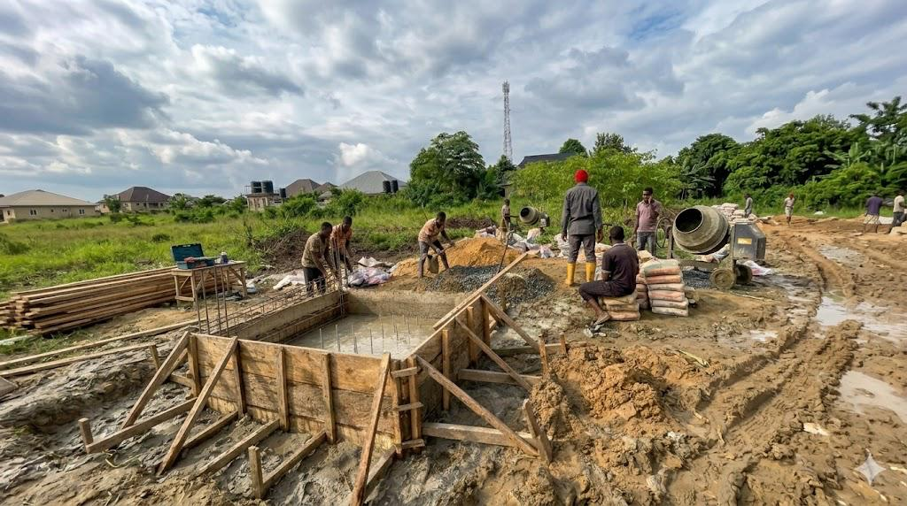

Builders, Not Theorists: Why Operational Know-How Is NRG Bloom's Real Moat

The Market Has Enough Commentary. It Needs More Builders.
Every week, another thesis is published about stranded energy. Another white paper on the AI power crisis. Another LinkedIn essay explaining why flare gas is the obvious answer to the data center bottleneck. The ideas are not wrong. They are, by 2026, entirely mainstream.
What the market has less of is companies who have actually done the work. Who have stood on a pad in the Niger Delta, watched a generator come online, seen the first container energize, and lived through the unglamorous months that follow. Converting stranded energy into productive compute is a construction problem before it is anything else. It is a civil works problem, a logistics problem, a commissioning problem, and a human-systems problem. The thesis is easy. The build is not.
NRG Bloom was founded on the conviction that the companies which will define this category are the ones with operational and construction know-how, not the ones with the sharpest slide decks. This post is a statement of posture. Going forward, the Insights section of this site will reflect that. Less commentary. More field discipline.
What the Niger Delta Proved
In February 2025, NRG Bloom energized its first modular data center at Ogboinbiri, in Bayelsa State, Nigeria. The installation runs at 1.5 MW, with a further 5 MW in development. It has operated for more than thirteen months. That single fact separates NRG Bloom from the overwhelming majority of companies in the stranded-energy compute conversation, most of whom have never commissioned a site at all.
The operational numbers are not glamorous, but they are real. Energy cost at site has run between $0.02 and $0.032 per kilowatt-hour, roughly a third of the industry's mining breakeven and a small fraction of grid data center electricity pricing in developed markets. Methane that would otherwise have been flared has been redirected into productive compute, delivering an estimated 300 tonnes of CO2e mitigation through the life of the deployment so far. These are not projections. They are outcomes.
Beyond the numbers, the Niger Delta deployment produced something more valuable: a documented, battle-tested understanding of what it takes to build modular compute in one of the most operationally demanding environments in the world. Humid tropical air, corrosive atmospheres, logistics friction, security discipline, and an energy source whose pressure, composition, and flow require continuous measurement and response. Every one of those conditions is a lesson that cannot be learned from a spreadsheet.
The Gap Between "It Can Be Done" and "We Did It"
The stranded-energy-to-compute thesis has been articulated by dozens of companies. The number that have actually executed it at continuous operating scale is a much shorter list. The difference between the two groups is the difference between theory and practice, and that difference is measured in months of field learning that compress into decisions no outside consultant can replicate.
How do you specify a container for a site where ambient humidity routinely exceeds 85%? What cooling topology survives twelve months of dust loading without degrading GPU or ASIC performance? How do you sequence civil works when trucking access is seasonal? How do you design a commissioning protocol that validates gas supply under real operating load rather than under vendor-specified lab conditions? What does a personnel rotation look like at a site that is a day's travel from the nearest major airport?
These are not marketing questions. They are the questions that determine whether a site runs or whether it becomes a stranded asset of its own. Every credible operator in this space will eventually have to answer them. NRG Bloom has answered them with hardware in the ground.
The Modular Data Center Discipline
NRG Bloom's forward strategy is built around a single word: discipline. The company treats modular data center deployment as a repeatable engineering and construction program, not a bespoke project. Every new site is sequenced through the same stages: site qualification, civil preparation, power commissioning, compute deployment, and operational steady-state. The sequence is the moat.
Site qualification is the first and most important gate. A site where energy is available is not the same as a site that is deployable. Flow rate, pressure, persistence of supply, host-country regulatory posture, logistics access, and the commercial structure of the relationship with the energy producer all determine whether a project actually gets off the ground. The most common failure mode in this category is deploying capital to a site that looked right on a map and proved impossible in the field. NRG Bloom's qualification discipline exists to surface that risk before the first dollar of hardware gets committed.
Power commissioning is the second gate. Before any high-value compute is delivered, the site must demonstrate continuous generation under production-equivalent load. Stress testing the gas supply, the gensets, the cooling loop, and the electrical distribution for weeks at a time surfaces the failure modes that matter. Sites that cannot hold that load do not proceed. Sites that can move to the next stage with documented operating envelopes.
Compute deployment proceeds only after a site has passed commissioning. Equipment is staged, installed, and brought online against a known operating envelope rather than a theoretical one. The build sequence is deliberately linear — each stage must produce the inputs the next stage needs. Skipping a stage is what turns cost estimates into cost overruns. The discipline in this category is not optional, and the sites that are running today are the ones whose operators refused to cut corners.
What makes this approach a system rather than a series of projects is that it is designed to be repeated. The company is not building data centers one at a time. It is building a repeatable deployment discipline that can be applied to a portfolio of sites.
Why Capital Is Moving Toward Operators, Not Explainers
The investor conversation in this category has changed materially over the last twelve months. In 2024 and early 2025, it was reasonable for a stranded-energy compute company to be evaluated on the strength of its thesis. That window has closed. In 2026, capital is asking a different question: show us the site, show us the uptime, show us the operating envelope.
Part of this shift is driven by the maturation of the sector. Enough companies have announced deployments without delivering them that sophisticated investors have learned to separate intention from execution. Part of it is driven by the AI power crisis itself. Hyperscalers and sovereign AI buyers no longer have the luxury of evaluating frontier infrastructure on a two-year horizon. They need capacity that is energized, validated, and contractable now. The companies that can show a live site will win contracts that are foreclosed to companies still in the thesis phase.
The same dynamic applies to energy partners. Oil and gas producers under regulatory pressure to eliminate routine flaring are no longer interested in speculative offtake structures from unproven operators. They are looking for partners who can arrive at site, integrate into their operating envelope, and deliver measurable gas utilization against a compliance calendar. That is a conversation that rewards field credibility.
NRG Bloom is positioned for the shift the market has already made. The company's credential is not a forecast. It is a build.
What Comes Next: Kenya, Colombia, and a Build Cadence
The next phase of NRG Bloom is about replication. The Niger Delta experience is the template. Kenya and Colombia are in active pipeline, each representing a distinct class of stranded energy: East African geothermal curtailment and Latin American associated gas. Every new site is an opportunity to refine the deployment sequence, improve the commissioning playbook, and shorten the timeline from signed site agreement to first productive kilowatt-hour.
The operational goal is a build cadence, not a hero project. The company is measuring itself on time-to-commissioning, on capital efficiency per deployed megawatt, and on the percentage of deployment steps that become standardized rather than custom. A team that can deploy the second container faster than the first, and the fifth faster than the third, is a team whose advantage compounds. Every site makes the next site easier. That is the real compounding asset in this category, and it accrues only to companies that keep building.
The Insights section will follow the work. Upcoming posts will document modular data center engineering choices, the field economics of off-grid commissioning, what it takes to qualify a stranded-energy site for deployment, and the human systems — community relationships, energy-partner negotiations, and the governance realities of frontier markets — that determine whether a project actually gets built. This will not be commentary. It will be the operating record of a company that intends to lead this category by building more of it.
Builders, Not Theorists
Stranded-energy compute is a real infrastructure category now, and it is going to be contested by a growing number of companies. The ones who will still be standing at the end of the decade are not the ones with the most elegant framing. They are the ones who know how to pour a pad, energize a bus, commission a container, and hold a site at steady state month after month.
That is the standard NRG Bloom measures itself against. Modular data centers. Built. Operational. Replicable. The commentary will follow the work, and the work is what matters.
If you are an energy producer with stranded gas or curtailed renewables, a capital partner evaluating real-asset infrastructure in this category, or a compute buyer who needs capacity outside the grid-constrained corridors, NRG Bloom is open for conversations that move toward a site, not toward a slide.